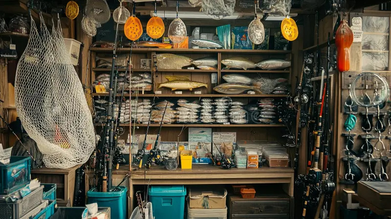
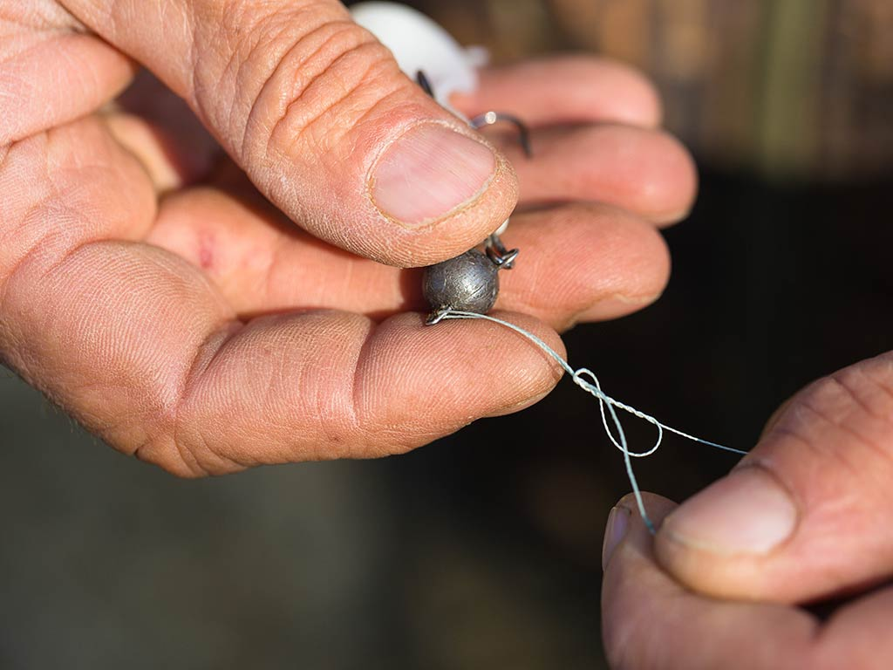

Hank’s Bait & Tackle is a locally owned fishing supply shop serving the Central Coast of California. Owner Hank Eide grew up fishing the piers of Morro Bay and the surf along Avila Beach, learning early on that preparation makes the difference between a slow day and a successful one. After years of fishing local waters and working alongside charter crews, Hank opened the shop to create a dependable place where anglers could find quality gear, fresh bait, and honest advice. He built the store around what Central Coast fishermen actually need, equipment that handles cold Pacific waters, rocky structure, and strong currents.

We carry rods and reels designed for rockfish, halibut, lingcod, and striped bass, along with terminal tackle, braided line, surf rigs, and daily live bait. Our inventory reflects the seasons and the conditions, because fishing on the Central Coast changes throughout the year. More than just a store, Hank’s is part of the local fishing community. It’s a place where anglers stop in before sunrise to grab bait, check the latest bite reports, and talk about what’s working offshore or along the jetty.

At Hank’s Bait & Tackle, our goal is simple: help you head out prepared and confident, whether you’re casting from the beach, launching from the harbor, or chasing fish beyond the kelp beds.